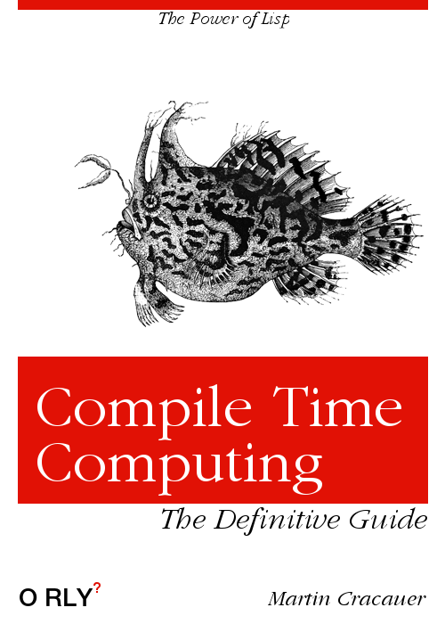

Я, наконец, сажусь и пишу о самом важном для меня аспекте разработки программного обеспечения.

Это вычисления во время компиляции. Вычисления во время компиляции означают, что код, который вы позже компилируете, - это не просто то, что вы записали. То, что вы компилируете позже, также является кодом, «написанным» вашим кодом. Код генерации кода. Макросы в некотором роде, но не запутанные макросы с тегами. В Лиспе вы даже используете один и тот же язык для обоих, что позволяет повторно использовать всю вашу предыдущую работу для вычислений как во время компиляции, так и во время выполнения.
В чем здесь смысл? Если все сделано правильно, вычисления во время компиляции позволяют вам хранить все допущения, которые вы делаете во время программирования, в одном месте.
Каждый раз, когда вы просачиваете одно-единственное предположение более чем в одно место, вы создаете проблему, когда позже меняете свое мнение об этом предположении. Я думаю, что все здесь знают, что разумной, полной спецификации программы до того, как она будет написана, никогда не было и не будет. Изменения - это характер разработки программного обеспечения, и они начинаются задолго до того, как программа пройдет свой первый выпуск. Вам необходимо изменить свое мнение о предположениях и иметь единую центральную ручку управления для каждого из ваших старых предположений. Вы хотите изменить одно место и заставить его распространяться по всей вашей системе, исходя из того единственного предположения, которое вы меняете в одном месте. Только одно написанное человеком место для каждого предположения.
Сначала мелкий шрифт: справка по редактированию от @dcooper8. Большое ему спасибо. Это было написано, когда я все еще работал в Google над QPX, чего больше нет. Эта статья является важной частью моего изложения о сосредоточении и управлении вниманием программистов, также см https://medium.com/@MartinCracauer/on-attention-focus-and-autism-in-the-tech-workplace-8246526fbbc0
Давайте сначала посмотрим, что делают другие языки:
Вычисления во время компиляции были в моде в сообществе C++ пару лет назад, когда шаблоны стали достаточно мощными, чтобы выполнять некоторый ограниченный объем вычислений во время компиляции (которые я буду сокращать здесь и далее как «CTC»-compile-time computing). Это не зашло слишком далеко из-за серьезных ограничений языка программирования времени компиляции в C++ (язык, который имеет только один тип данных - типы C++ - и только одну управляющую конструкцию - рекурсию - и в нем нет концепции типов коллекций. и многократно повторяя их). Я разочаровался. Я до сих пор очень рад, что это произошло, потому что это сделало СТС заметным в умах многих людей.
Другие формы CTC включают макросы из препроцессора C и C++, различные формы использования m4/m5 и язык D, все из которых также ограничены как по своей выразительной мощности, так и по способности взаимодействовать с основным языком. В своей серии блогов я буду использовать Common Lisp («CL»), потому что на данный момент это единственный язык, в котором полностью развиты вычисления во время компиляции. Я понимаю, что при этом немного сложнее привлечь большую аудиторию к этому. Хотя у CL есть проблемы даже на мой взгляд, это то, что у нас есть для вычислений во время компиляции. Каким бы ни был недостаток CL, я, десятилетиями использую CTC, без него не обойдусь. Ничто другое не позволит нам написать код, который мы будем добровольно поддерживать через 30 с лишним лет. Все остальное - однократная запись, а затем либо «боль от поддержки Унаследованной системы», либо постоянный поток переписываний с соответствующим эффектом второй системы.
В Common Lisp вычисления во время компиляции используют один и тот же язык для компиляции и выполнения. Каждую функцию, которую вы пишете на CL, вы можете вызывать во время выполнения (например, в «нормальной» программе) или во время компиляции (для генерации или изменения другого кода на основе концентрированной спецификации).
Теперь, для читателя, который хочет следовать примерам, это требует небольшой работы по настройке. Вы должны получить среду Common Lisp (CL), чтобы попробовать это. Достаточен минимальный набор вещей:
1. У вас должен быть редактор кода, в котором отображаются совпадающие круглые скобки (при вводе закрывающей скобки она выделяет совпадающую открытую). Вы должны это иметь. Все остальное для Лиспа непригодно. Он также должен иметь автоматический отступ, если вы можете его получить.
2. у вас должна быть Repl (командная строка), которая позволяет вам повторять и редактировать команды. Вы можете использовать реализацию CL, которая использует строку чтения GNU для ввода (например, CLISP), или вы можете использовать такую реализацию, как SBCL, внутри буфера оболочки Emacs.
3. вы можете установить SLIME, которая является настоящей IDE внутри Emacs. Мои примеры будут достаточно простыми, поэтому вам это не понадобится. С другой стороны, Slime может помочь поиграть с отладчиками и изучить язык.
4. сли вы хотите использовать какие-либо сторонние библиотеки (не обязательные для моих примеров, но подходящие для личных экспериментов), посмотрите на Quicklisp.
Я рекомендую SBCL внутри Emacs. SBCL - это высокопроизводительная реализация с компилятором, которая позволяет вам писать код без накладных расходов; это означает, что скомпилированный код может работать так же быстро, как код C (применяются исключения и хаки, см. мою конференцию, где рассказывается о том, как ITA использует SBCL, чтобы быть быстрым). Он также имеет хороший набор предупреждений во время компиляции, включая предупреждения о несоответствии типов, и процветающее сообщество, которое активно разрабатывает и помогает людям. SBCL доступен для Linux, BSD, на различных процессорах, включая ARM, работающую на Raspberry Pi, OSX и даже Windows. [Примечание редактора - вы можете получить бесплатные предварительно созданные установочные пакеты с Emacs, Slime и Gendl (построенные на CCL, но с планами предлагать также SBCL) для Linux, Mac и Windows с gendl.org]
Альтернативы: были предприняты различные усилия для создания механизмов, связанных с макросами Lisp на других языках - обычно производных от Lisp, которые пытаются сделать Lisp более доступным, отказавшись от синтаксиса, основанного на скобках. Я не обнаружил, что они позволяют выполнять вычисления в течение всего времени компиляции в том смысле, который я здесь опишу. Это всегда «мы реализовали наиболее распространенные варианты использования макросов CL», и я считаю, что они обычно отбрасывают то, что мне нужно делать. Я был бы очень благодарен читателям, которые предоставят реализации того, что я покажу здесь, в Dylan или любых производных от Lisp на основе JVM. А пока я буду придерживаться CL. Не поймите меня неправильно. Даже на мой взгляд, CL может стать трудночитаемым, если вы достаточно умны для макросов. Но если принять во внимание, какую выразительную силу обеспечивают эти макросы и насколько они более удобны в обслуживании по сравнению с распространением фактов по всему исходному коду, это выглядит разумным. Я был бы полностью за то, чтобы иметь еще лучший язык с полнофункциональными вычислениями во время компиляции.
Макросы Lisp также могут значительно улучшить читаемость. Одним из первых примеров является то, что вычисления во время компиляции Lisp позволяют вам создавать любой литеральный(буквальный) объект, который вы хотите, без необходимости поддержки компилятора или парсера для него. Если вам нужен литеральный(буквальный) объект в вашем исходном коде, который "запечен" в вашем двоичном файле, то есть хэш-таблица, указывающая на кучу массивов с комплексными числами - не проблема. Даже если в языке еще нет синтаксиса для нужного вам литерала, вы можете добавить его благодаря вычислениям во время компиляции. Однако вам придется перейти (в) скобки, и для этого вам понадобится редактор с отображением соответствия скобок и, в идеале, поддержкой отступов для Lisp.
И последнее, но не менее важное: есть еще Diff Efficiency
(дифференцированная эффективность). Что, черт возьми, такое «дифференциальная эффективность»?
Это означает, что если вы посмотрите на git diff вашего кода
по сравнению с другим состоянием вашего кода, вы увидите только фактическое функциональное
изменение. Не много шаблонов. Не много копий и вставленных небольших вариантов этого
функционального изменения. Если вы используете подсветку синтаксиса, она будет работать
правильно, потому что вы не встраиваете чужой язык в исходный код вашего основного языка.
Одно предположение, одно место. Одно предположение изменилось, одно место поменялось.
(примечание: IDE, которые «помогают» вам вносить большие стандартные изменения автоматически, но затем не сворачивают их повторно, когда вы хотите увидеть различия, заслуживающие того, чтобы их сожгли на костре)
Вычисления во время компиляции позволяют вам хранить все допущения, которые вы делаете во время программирования, в одном месте, что значительно повышает возможность изменения.
Программисты на самом деле хотят это сделать, но непреодолимое повторение их сильно расстраивает. Наши инструменты - отстой.
Common Lisp - это язык, который я в настоящее время использую для вычислений во время полной компиляции.
Внутри основного исходного кода вы создадите небольшие «нестандартные» мини-языки, чтобы сконцентрировать информацию в компактном пространстве. Внутри основного исходного кода. Не переходя к другому синтаксису внутри специальных маркеров. Вы сделаете это без необходимости во внешней программе с парсером, не говоря уже о том, чтобы генерировать код из Python. Эти мини-языки просто определяют способы выразить то, что вы хотите, в исходном коде, которые вам наиболее удобно им сказать. Затем макросы делают их пригодными для использования без изменения компилятора или вызова какого-либо внешнего инструмента. Как побочный эффект, это значительно снижает количество шаблонов, которые требуются вашей программе. Boilerplate(шаблон) плохо подходит для последующих изменений, поскольку он увеличивает размер различий, созданных в результате изменений, и вы не можете увидеть «суть» в данном различии, потому что он полон настроек интерфейса, которые не влияют на выполнение программы из-за этого изменения.
О себе: Меня познакомил с Common Lisp Райнер Йосвиг @RainerJoswig (большое спасибо!) На факультете ИИ Гамбургского университета ок. 1992 (Я изучал физику, но кто считает?). В то время я искал решение всех этих проблем в Smalltalk. Это было первоклассное введение с использованием Symbolics Lisp Machine под управлением Genera (о которых я получу пару позже) и знаменитой IDE, которой в то время был Macintosh Common Lisp. Я начал использовать CL и FreeBSD на работе, выбрал CMUCL и, в конце концов, сделал работу над Common Lisp CMU с открытым исходным кодом - еще одно спасибо Скотту Фалману @ScottFahlman. CMUCL позже превратился в SBCL. В 2000–2001 годах я был нанят ITA Software, чтобы обеспечить стабильную работу своей поисковой системы QPX на CMUCL с открытым исходным кодом для первых коммерческих клиентов QPX. (также сердечное спасибо всем в Orbitz от меня. Для меня было честью работать с вами)
Факт в том, что удобство сопровождения и способность изменять ваше мнение, предоставленные нам Lisp, были ключевыми факторами успеха ITA. Если вы работаете в сфере ценообразования авиакомпаний, вам действительно нужна возможность изменить свои предположения о том, что на самом деле означают все эти забавные правила тарифов (не менее полные по Тьюрингу). Успех ITA привел к тому, что меня купил Google, где я до сих пор нахожусь (обновление - уже нет). Все еще борюсь с той же кодовой базой 15 лет спустя, и до сих пор не ясно, кто выигрывает (нет, правда, я люблю QPX).